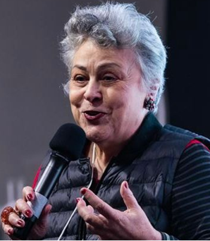

Aldaisa Sposati
Professora titular sênior da PUCSP, pós doutora pela Faculdade de Economia da Universidade de Coimbra, pesquisadora do CNPq e do Núcleo de Estudos e Pesquisas em Seguridade e Assistência Social/PUCSP, Coordenadora do CEDEST-Centro de Estudos das Desigualdades Socioterritoriais– PUCSP/INPE. (2002-2014); Membro da RBRB- Rede Renda Básica da Cidadania; ex-secretária municipal de Administrações Regionais(1989) e de Assitencia Social (2002); ex-vereadora por São Paulo ( 1993-2002) . Última publicação: Sposati, A e Meira P. - TRANSFERENCIA DE RENDA NO BRASIL entre a herança recebida e a direção prometida. São Paulo, Cortez Editora, 2023.
Regina Paixão
Presidenta do Conselho Estadual de Assistência Social de São Paulo para o mandato de 2024 a 2026, representando as entidades com atuação na área da Criança e do Adolescente. É membra da Sociedade Santos Mártires e Coordenadora do Fórum em Defesa da Vida.
Kelseny Medeiros Pinho
Secretária Parlamentar da Deputada Federal Erika Hilton, Mestranda em Planejamento e Gestão do Território pela UFABC e integrante do Colaboratório Nacional de Políticas Públicas para População em Situação de Rua (FIOCRUZ)
Maria Beatriz da Rocha Alarcón
Mestre em Serviço Social pela Pontifícia Universidade Catolica de São Paulo (PUC/SP) .Assistente Social concursada das Varas de Familia e Sucessões do Tribunal de Justiça do estado de São Paulo.Membro do Comite Estadual e do Fórum Estadual de Mulheres do PCdB/SP
Neide Fernandes
Assistente Social e Mestre em Serviço Social. Membra do Nepedh/PUC-SP. Autora do livro Sigilo e Ética do/a Assistente Social.